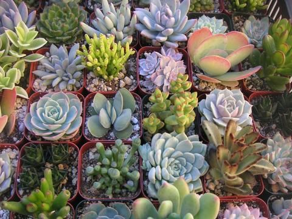
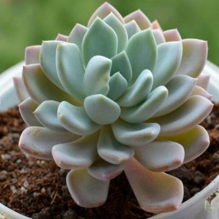
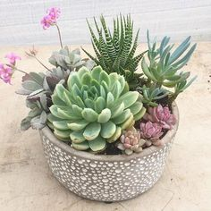

Суккуленты
Что это такое?
Суккуленты – это общее название для целой группы растений, которые могут совершенно не быть родственниками друг другу, даже дальними. Что их объединяет, так это типичная природная среда обитания и способ, которым эти виды решили проблему – растут они в пустынных и засушливых регионах, а влагу в больших количествах способны накапливать в специальных типах тканей. Из-за этих тканей их стволы и ветки нередко приобретают характерную толстую, мясистую форму.
Условия содержания
В своей естественной среде обитания суккуленты обычно сталкиваются с довольно сложными условиями – с водой там определенные проблемы, бывает очень жарко, почвы обычно не отличаются особым плодородием. Как ни парадоксально, создавать для растения суровых пустынь идеальный в нашем понимании комфорт не следует – все механизмы этого организма приспособлены для выживания именно в таких условиях, потому улучшенный полив или стремление внести лишних удобрений в почву к добру обычно не приводят.
Более того, все эти кактусы так высоко ценятся как раз за то, что их можно предоставить самим себе. Вы можете, например, не поливать их месяц или даже два – и им ничего не будет, что очень удобно в условиях современного гиперактивного мира. При этом специалисты утверждают, что определенного режима все-таки стоит придерживаться. Дело в том, что растение будет максимально красивым лишь в том случае, если мы обеспечим ему условия, близкие к тем, что привычны для него на родине.
Правила ухода
Полив должен быть регулярным около 1-2 раз в неделю летом (можно реже, определив мягкость листа), и раз в три недели зимой. Всегда проверяйте, чтобы верхний слой почвы просох перед следующим поливом. Следует использовать отстоянную или отфильтрованную воду комнатной температуры. Если в вашем горшке нет отверстия снизу, следует установить ограничение вносимой жидкости, примерно 5 мл за раз, если будете видеть, что листья растения стали менее мясистыми и мягкими, увеличьте количество вносимой жидкости.
Освещение должно быть хорошим, можно выбрать южное окно, для размещения вашего друга, но, несмотря на то, что суккуленты хорошо переносят открытые солнечные лучи в диких условиях, летом растение лучше притенять, и постепенно приучать к яркому солнцу после покупки в магазине, и также после холодного времени года.
У некоторых видов суккулентов окраска листьев напрямую зависит от наличия солнечных лучей. Например, красный цвет на солнце приобретают такие виды как – Эхеверия агавовоидная, Очиток красноокрашенный, Эхеверия пулидонис, Очиток Нуссбаумера.